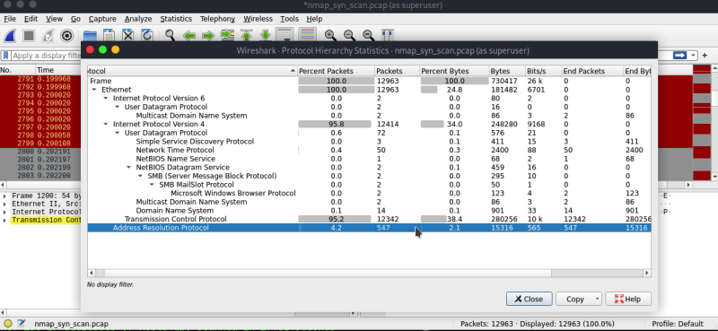

With Wireshark we can analyse plenty of thinks rather than Nmap .
First we have to capture the packets or live traffic using tcpdump which is a command line packet capturing tool, and we have to save the traffic into a pcap file , the traffic here is nothing but Nmap traffic which we are going to create .
To capture the traffic run the command :-
sudo tcpdump -i eth0 -w nmap_syn_scan.pcap
┌─[root@parrot]─[~]
└──╼ #tcpdump -i enp0s1 -w nmap_syn_scan.pcap
tcpdump: listening on enp0s1, link-type EN10MB (Ethernet), snapshot length 262144 bytes
^C12963 packets captured
12965 packets received by filter
0 packets dropped by kernel
-i = network interface
-w = the file in which we capture the traffic
To create the traffic run the command :-
sudo nmap -sS 192.168.1.1/24
Now find the pcap packet and if you are uncertain about the file and you know it is a .pcap file then use this command :-
┌─[user@parrot]─[~]
└──╼ $sudo find / -type f -iname *.pcap
/home/user/nmap_syn_scan.pcap
Move the file into the root directory or run the tcpdump command as root user .
Now we can Analyse the packets using wireshark. Run wireshark as superuser ;-
Select the pcap file and start to analyse.
Look into capture file properties -
This will show almost every details about the packets and its properties.
Here this 45 packets are related to both syn and ack packets of tcp - which indicates open ports.
To get a specific source ip packets:-
To get specific destination ip related packets:-
This image shows how to make a filter with one right click . if we want any filter corresponding a specific item , right click on that item and do as shown in image .
To get only tcp syn packets :-
Here there are 8269 tcp syn packets out of 12963
Convert ip address into domain name using name resolution technique :-
Look into Protocol Hierarchy Status . where you can find and analyse the whole traffic flow.

Look into the ARP column - there are 547 ARP packets we captured. this means an ARP request and respond happened in hte network - clearly indicating a Network Scanning in bulk for all 255 hosts.
To find open ports of an specific ip address :-
We can find numerous informations using wireshark , and these are the main way of packet analysis.